插件编写 I¶
前文说到，要想实现功能就得制作一个个单独的插件。我把插件分为两类：
- 根据用户发来的一条消息，可以立即根据一定的逻辑进行运算，然后给出输出
- 比如，给机器人发送指定的消息，它能够按照简单的逻辑计算出今天的年月日信息，并发送给用户
- 根据用户发来的一条消息，还需要本地提供的一些状态数据才能进行运算、给出输出
- 比如，给机器人发送指定的消息，它需要查看本地的某个文件中保存的信息（比如，创建这个机器人的年月日），然后根据逻辑计算出这个机器人已经运转了多少天，并发送给用户
- 本地的状态数据可以是一个个的文件，也可以是数据库（如使用 MySQL，使用数据库更为安全），所以这种插件写起来难度还是比较大的
还有更复杂的，需要类似对话的过程才能完成的插件，如：
- 用户：一年的第 114 天是星期几？
- 机器人：今年是哪一年？
- 用户：2023
- 机器人：2023 年的第 114 天是星期 X
这就表明机器人在收到第一条消息之后，不能立即结束任务，需要挂起等待用户的下一次回应。这种插件对于一般的（非计算机专业）同学来说难度太大，我们的教程中不会讲。
最后提醒一下，接下来的内容你至少要了解一下 Python 的基本知识才能做。（虽然可以依葫芦画瓢，但是也不能对 Python 完全没有任何了解）
创建插件文件夹¶
如果你是按照上一篇教程刚刚开启了机器人的服务，现在应该有两个终端。一个终端运行 go-cqhttp，另一个运行 nonebot。
由于我们现在要给 nonebot 加插件，并且运行 nonebot 时使用了 --reload 参数（意思是，持续监测任何文件夹中的变化，一旦有文件发生改变，就重新启动机器人，这是没有必要的），我们现在先把这两个终端都关掉。
来到 nonebot 的文件夹（new_qq_bot）
右键创建一个空的文件夹，命名为 plugins，这就是我们的插件文件夹
右键用 Pluma 打开 pyproject.toml
找到 plugin_dirs，在里面添加我们刚刚创建的插件文件夹名字（注意要加英文引号）
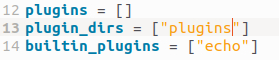
打开终端，输入 nb plugin 命令
选择创建一个新的插件，这里为了示例，我们创建一个名为 auto_pull 的插件
一直回车就可以创建完毕
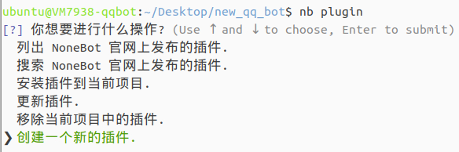
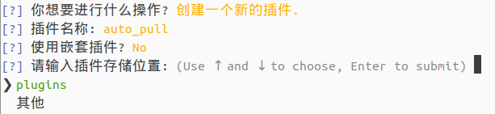
完成之后
你会发现刚刚我们创建的 plugins 文件夹中多了你要创建的 auto_pull 插件的文件夹，其中包含两个文件，如图所示
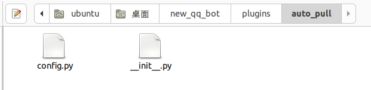
我们要创建的这个 auto_pull 插件是做什么的呢？
因为我们下面马上要撰写一些其他的插件，也就是说要写代码，在虚拟机上写代码由于网速的原因，会比较卡顿，体验不好。
接下来，我们将使用 Git 和 GitHub 来实现一个功能：我们在自己的电脑上写代码，写好代码之后上传到一个 GitHub 远程仓库，这个插件会在我们的虚拟机上尝试从远程仓库拉取最新的代码（可以是我们手动给机器人发消息让它拉取，也可以是每隔1分钟自动拉取一次）。
如果我们传了一版最新的代码，这个插件就会将最新的代码覆盖之前的旧代码。还记得之前我们说的 --reload 参数会监视文件的更改吗？插件将文件覆盖之后，nonebot 就会因为检测到文件更改而自动重启，使得我们的更改生效。
从外观上看，我们的工作流就变成了：在本地写代码 — 提交代码到远程仓库 — 发消息给机器人让它下载最新的代码。
不过，这里又有一大堆的东西要配置了。程序员的思维就是宁愿花一些时间去做自动化的准备，也不愿意一直手动做可以自动化的工作。
第一步：配置 Git
时时刻刻要记住虚拟机和你的电脑是两台不同的设备，他们之间安装的软件等都是不互通的。我们刚刚在虚拟机上安装了 Git，不过还没有设置用户名和邮箱。
- 打开虚拟机终端，输入
git config --global user.name "Your Name"命令（引号内改成你的真实英文名字） - 然后输入
git config --global user.email "email@example.com"命令（引号内改成你的真实邮箱）
- 现在转到我们自己的电脑，可能是 Windows，也可能是 macOS，你可以看这篇教程，根据自己的系统类型进行安装
- 安装完成后，自己电脑上的终端（我是 Windows 11 系统，在桌面空白处右键选择在终端中打开）输入
git命令，如果出现下面这张图就表示还没安装 Git
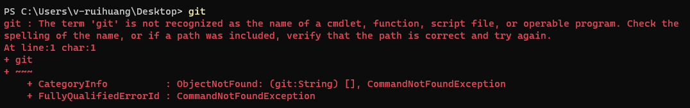
- 安装 Git，注意，安装时除了安装的路径外，其他全部默认，一直点下一步就行！
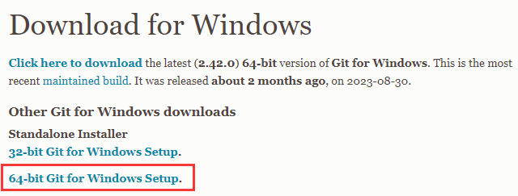
- 安装完成之后，关闭终端重新启动，再输入
git命令，发现不再报错了，而是跳出使用手册，就说明安装成功
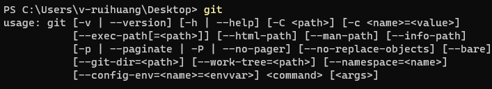
- 按照之前的步骤设置用户名和邮箱
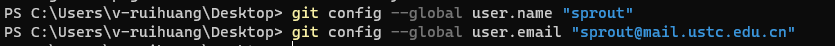
第二步：配置 Gitee 远程仓库
由于国内无法访问 GitHub，我们这里用 Gitee（国产）作为替代。
- 注册一个账号，最好是用你刚刚配置 Git 用的邮箱。
- 注册后登录，点击右上角的 + 号，新建一个 Repository（简称 Repo）
- 我的系统是英文的，你只需要点击对应的中文按钮就行
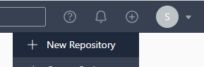
- 只修改两个地方：最上面的仓库名，我设置为 bot_plugins，下面的可见性设置为 Private，点最下方 New 按钮创建
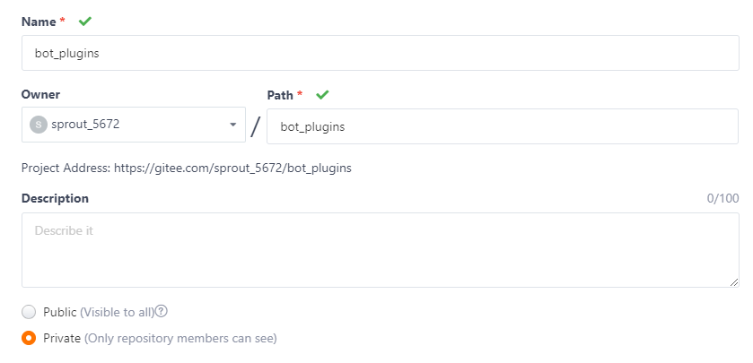
- 创建完成后，最上面的 HTTPS/SSH 有一个选项，我们选择 SSH，然后页面中间有如下指令，你可以先打开一个记事本记着（请确保红框内的内容除了用户名和仓库名外与我相同）
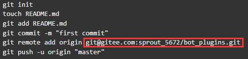
-
之前我们把仓库设置为 Private，那么远程仓库怎么知道你是你呢？我们需要给自己的电脑以及虚拟机都创建一个钥匙，这之中具体的原理你有兴趣可以自己上网搜索，我这里就按部就班给出教程了
- 在自己的电脑上打开终端，输入
ssh-keygen -t rsa -C "Your email"命令，然后一直回车即可创建，记得把邮箱改成你自己的
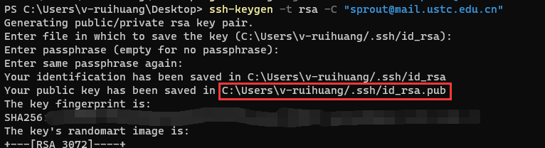
- 看到上方红框框起来的地址了吗？复制它，在终端中输入
cat C:\Users\v-ruihuang/.ssh/id_rsa.pub，就会弹出一长串以你的邮箱结尾的内容，复制全部
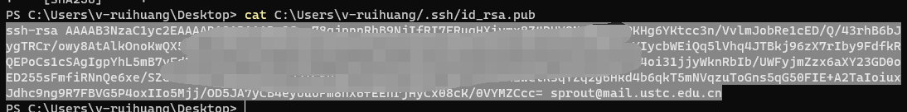
- 回到 Gitee，右上角头像-设置，左边找到 SSH Keys 这个选项
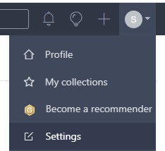
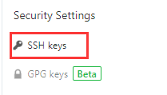
- 给 Key 起个名字（
bot_local_rsa），填写刚刚复制的内容，点击 submit
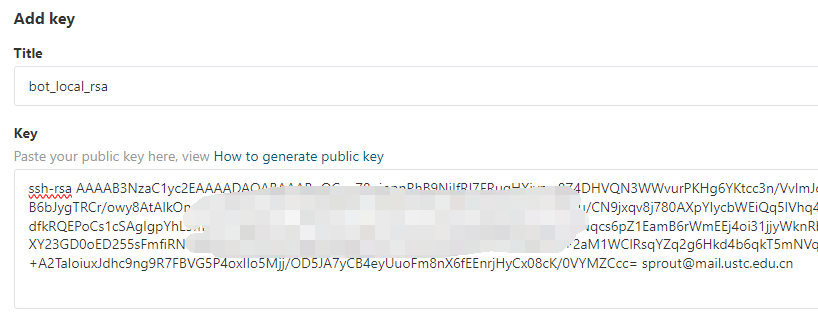
- 输入密码验证，即添加成功
- 现在，转到虚拟机上，执行同样的步骤
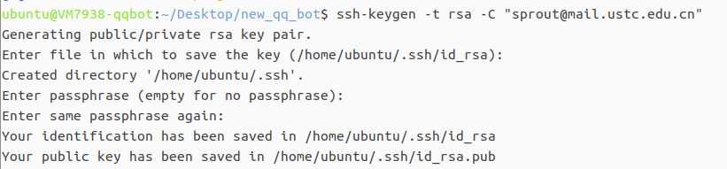
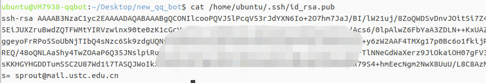
- 把虚拟机上的 Key 复制出来，在虚拟机网页的左侧有个工具栏，点一下，选择第二个按钮，就可以看到虚拟机中此时的剪贴板有什么内容，可以复制出来，在刚刚本机的电脑打开的 Gitee 页面里添加，省的在两个地方都要登录 Gitee，麻烦
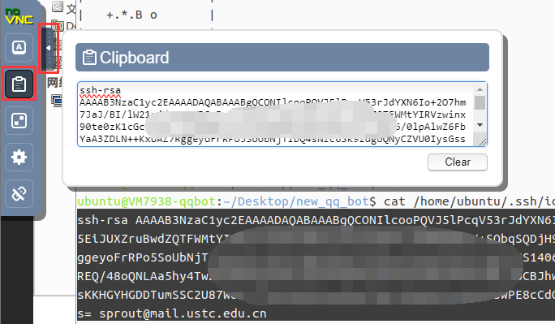
- 两个 SSH Keys 都上传后，设置页面的情况如下：
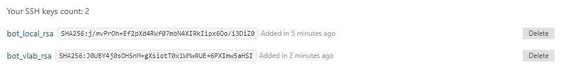
- 在自己的电脑上打开终端，输入
- （做到这你不会逐渐忘记标题了吧）
- 我们现在是想要把本地的插件文件夹和远程仓库联系起来，刚刚我们创建了远程仓库，还没有把它们联系起来
- 来到虚拟机上，我们现在要在插件文件夹中打开终端，然后输入之前让你在记事本上先记住的命令，你可以看下面的截图来输入
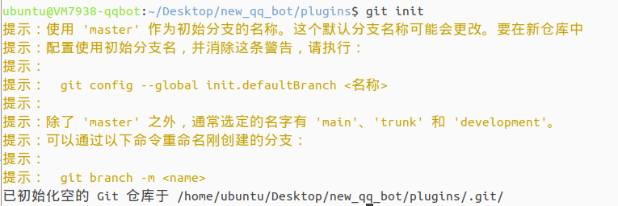
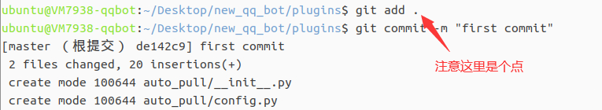
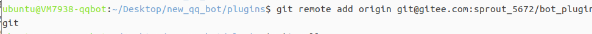
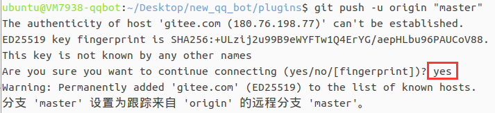
- 在输入
git push命令时，第一次会提示如图所示的内容，请手动输入一个 yes，然后回车 - 回到你的电脑，在你想放写代码的文件的地方打开终端（我就以桌面为演示），输入
git clone "path"，把这里的"path"改成仓库的地址，就可以把远程仓库里的内容克隆到本地。
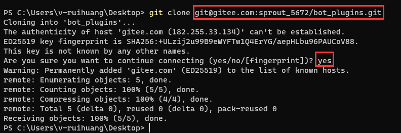
- （仓库的地址可以在这里找到）
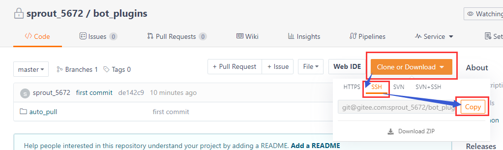
- 好了，我们费了这么大周折，才算把远程仓库配好！接下来，我们就会在自己的电脑上进行插件的撰写
撰写第一个插件 auto_pull¶
经过上面的配置，现在我们在自己的电脑上就可以撰写插件。
在 VS Code 中打开刚刚克隆下来的文件夹，我们只需要修改 __init__.py 这个文件就可以了。
清除 __init__.py 这个文件的所有内容，将我下面写好的代码复制进去
from nonebot import on_keyword
from nonebot.typing import T_State
from nonebot.adapters.onebot.v11 import PrivateMessageEvent, Bot
from nonebot.permission import *
from nonebot import require
from nonebot.log import logger
import os
try:
scheduler = require("nonebot_plugin_apscheduler").scheduler
except BaseException:
scheduler = None
logger.opt(colors=True).info(
"已检测到软依赖<y>nonebot_plugin_apscheduler</y>, <g>开启定时任务功能</g>"
if scheduler
else "未检测到软依赖<y>nonebot_plugin_apscheduler</y>，<r>禁用定时任务功能</r>"
)
admin_user = 1025890895
repo_directory = "/home/ubuntu/Desktop/new_qq_bot/plugins"
# 每日定时执行git pull
def git_pull():
os.chdir(repo_directory)
status = os.system('git pull')
return status
# 被动执行git pull
gitpull = on_keyword('pull')
@gitpull.handle()
# 处理私聊消息
async def gitpull_handle(bot: Bot, event: PrivateMessageEvent, state: T_State):
if event.user_id == admin_user:
status = git_pull()
if status == 0:
await gitpull.finish('更新成功')
else:
await gitpull.finish('更新失败')
async def periodic():
return git_pull()
if scheduler:
# 每过10分钟执行一次
scheduler.add_job(periodic, "cron", minute='*/10', misfire_grace_time=60)
有三个地方可能需要更改
1. admin_user = 1025890895，需要填你自己的 QQ 号（不是机器人的），机器人只会对这个 QQ 号发来的消息做回应
2. repo_directory = "/home/ubuntu/Desktop/new_qq_bot/plugins"，需要你改成虚拟机上插件的真实位置（如果你是跟着我做的，可能只有这个项目名 new_qq_bot 需要改一下）
3. 最后一句 minute='*/10'，表示每 10 分钟执行一次，你可以自己改成想要的时间，或者直接把这个 if 语句块删了，只允许手动执行
修改好后，保存，在 VS Code 左侧提交并同步更改，等待同步完成
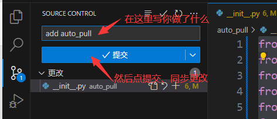
现在，转到虚拟机上面，在插件文件夹下手动运行一次 git pull
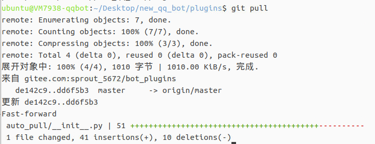
然后输入 cd ..（两个点）回到上级，输入 nb plugin，选择安装插件到当前项目
- 这是因为我们的插件中有定时的操作，依赖于商店中一个名为定时器的插件，我们需要从商店中安装这个插件（名字叫
nonebot_plugin_apscheduler） - 不是说我们自己写的插件也需要这样才能安装，这只是从商店安装别人写好的插件！
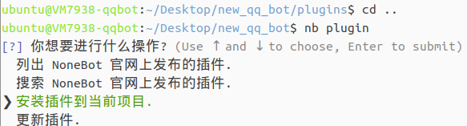
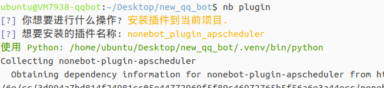
安装好后
按照之前说的方法，启动 nonebot 和 go-cqhttp，打开服务
给 Bot 私聊发消息（pull），如果收到回复，表示这个流程就对了
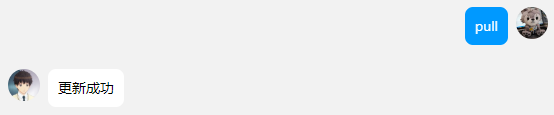
你还可以再看一眼虚拟机中的 nonebot 终端，会输出 pull 的执行结果
- 这里因为我没有对远程仓库做任何更改，所以执行的结果是提示已经是最新的。 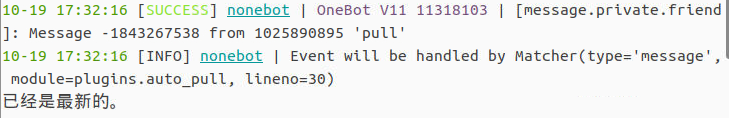
今后如何撰写插件¶
- 今后，你在自己的电脑上撰写插件即可
- 比如说，要创建一个新的插件，就在你自己电脑上操作
- 创建一个新的文件夹，文件夹名字就是插件名字（用英文）
- 把 auto_pull 文件夹里的
config.py和__init__.py两个文件复制过来，前者不做任何更改，后者随意更改
- 撰写完毕后，提交同步远程仓库
- 给你的机器人账号私聊发消息 pull，等待告知更新成功还是失败
总而言之，如果遵循这套流程，就不用怎么管虚拟机了。
然而 Debug 的时候可能还是需要上去，请注意不要在虚拟机上直接修改插件代码，只能在你自己的电脑上修改，否则会出乱子。
如果你是 Git 高手，应该知道这个乱子怎么解决，不过这个教程大多面向不怎么会 Git 的同学，就不赘述了，从表面上解决这个问题比较好。
当然，学校的虚拟机有时会维护，会导致关机重启，这样的话就需要你上虚拟机重新把服务打开。
（撰写：黄瑞轩）